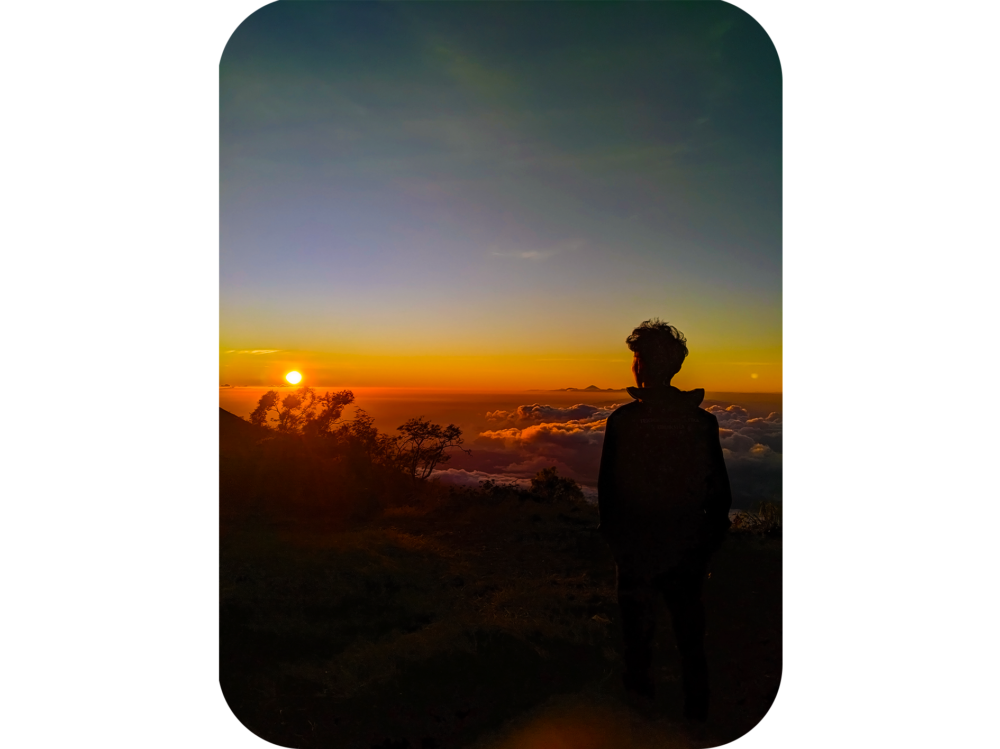

About Me
Nama saya Habibi Hidayat. Saya lahir pada tanggal 25 september 2004 dan dibesarkan di kota negara kabupaten Jembrana.
Riwayat Pendidikan
- Universitas Pendidikan Ganesha | Ilmu Komputer
- SMK Negeri 3 Negara | Teknik Komputer dan Jaringan (TKJ) | 2019-2022
